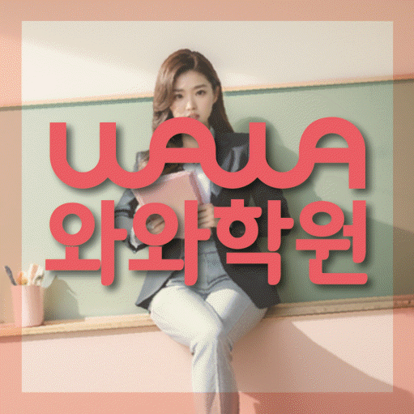

국어 수업 가능 학년
상담 시 가능 학년 확인
ACADEMIC SUPPORT LOCAL GUIDE
대전 서구 도안동에서 보습 수업을 비교할 때 필요한 현재 학년 진단, 학교 일정 반영, 과제·오답 피드백, 입시계획 확인 항목과 등록 전 질문을 구체적으로 정리했습니다.
30초 핵심 안내
도안동 보습학원을 알아보는 상황이라면, 답은 단순히 문제를 많이 푸는 수업을 고르는 데 있지 않습니다. 과제를 시작하려는 의지는 있지만 복습 간격이 불규칙한 학생에게 필요한 것은 현재 학년 자료를 바탕으로 원인을 나눈 뒤 짧은 복습을 고정 요일에 반복하고 확인 문제로 기억 상태를 점검하는 루틴을 수업마다 일관되게 적용하는 구조입니다. 또한 입시계획의 조건과 대전 서구 동서대로 692 에프엠프라임 1차 501까지 함께 확인해야 수업 내용과 생활 동선이 모두 맞는 선택이 됩니다.
도안동은 수업 가능 생활권 기준입니다. 실제 방문 센터는 와와학습코칭센터 도안점이며, 주소와 등록 정보는 아래 센터 기준 정보에서 확인할 수 있습니다.
상담 시 가능 학년 확인
초3 · 초4 · 초5 · 초6 · 중1 · 중2 · 중3 · 고1 · 고2 · 고3
초3 · 초4 · 초5 · 초6 · 중1 · 중2 · 중3 · 고1 · 고2 · 고3



센터 기준 정보
센터명·주소·등록 정보와 교습비 확인 경로를 상담 전에 살펴볼 수 있도록 정리했습니다.
대전 서구 도안동 상담 기준
대전 서구 동서대로 692 에프엠프라임 1차 501
대전서부교육지원청 등록 제 서4790호
실제 수업 가능 시간은 학년·과목별 일정에 따라 상담에서 확인합니다.
동네명은 수업 가능 지역을 찾기 위한 안내 기준입니다.
흥도초
유성중 · 봉명중 · 도안중
유성고 · 도안고 · 서대전여고
센터명·주소·등록번호·가능 학년·학교 참고 정보는 제공된 센터 자료를 기준으로 정리했으며, 실제 수업 범위와 일정은 상담에서 다시 확인합니다.
지역별 학습 안내
학생의 과목별 학습 상황과 상담 전에 확인할 기준을 여섯 가지 주제로 나누어 정리했습니다.
선행, 복습, 시험 준비를 모두 많이 하는 것이 대전 서구 도안동 학생에게 항상 좋은 계획은 아닙니다. 도안동에서 복습 주기가 흔들리는 학생은 먼저 짧은 복습을 고정 요일에 반복하고 확인 문제로 기억 상태를 점검하는 루틴을 통해 현재 학년의 필수 내용을 안정시킨 뒤 다음 단계를 정하는 편이 현실적입니다. 도안동 주간 계획은 학교 진도 대응, 누적 빈틈 보완, 평가 대비를 다른 색이나 칸으로 구분해 어느 목적의 공부인지 보이게 해야 합니다. 대전 서구 도안동에서는 시험이 가까워져 범위 학습이 늘더라도 이전 오답을 완전히 버리지 않고 짧은 확인을 유지하는 것이 좋습니다.
도안동 페이지의 제공 수업학교에는 흥도초, 유성중 등이 포함됩니다. 도안동에서는 학교명이 일치하더라도 학년과 시기, 실제 교과 수업에 따라 진도와 평가 방식이 달라질 수 있으므로 과거 경험만으로 범위를 추정해서는 안 됩니다. 대전 서구 도안동 학생의 주간 계획은 범위표, 학교 과제 공지, 수업 필기와 교과서 표시를 기준으로 수정되어야 합니다. 도안동에서 제공 학교 외의 경우에는 임의로 가능하다고 판단하지 말고 센터에 별도로 문의해야 합니다.
이번 도안동 페이지에서 설정한 학생은 과제를 시작하려는 의지는 있지만 복습 간격이 불규칙한 학생입니다. 도안동 진단에서는 겉으로 보이는 점수만으로 원인이 드러나지 않으므로 최근 교재에서 멈춘 지점, 혼자 풀 때의 첫 시도, 과제 후 재확인 여부를 따로 살펴야 합니다. 도안동에서 이 유형을 지도할 때는 짧은 복습을 고정 요일에 반복하고 확인 문제로 기억 상태를 점검하는 루틴을 먼저 적용하는 편이 좋습니다. 대전 서구 도안동 학생은 현재 학년의 진도를 무조건 앞당기거나 문제 수를 갑자기 늘리면 약점이 가려질 수 있으므로 설명 이해와 독립 풀이를 분리해 관찰해야 합니다.
“입시계획”은 합격을 보장하는 문구가 아니라 학생의 현재 학년, 학교 기록, 학습 상태와 지원 일정을 근거로 선택지를 정리하는 과정이어야 합니다. 도안동의 입시계획 관련 안내에서는 목표를 단정하기보다 필요한 자료, 준비 순서, 점검 시점과 대안 경로를 구분해 설명하는지 확인하십시오. 도안동 학부모가 과거 결과나 후기만 볼 경우 학생 조건의 차이를 놓칠 수 있으므로, 사례의 대상 학년과 출발점을 함께 물어보는 편이 좋습니다. 입시계획과 보습 수업이 연결되려면 당장 해야 할 교과 학습과 장기 준비를 별도 계획으로 제시하고 정기적으로 수정해야 합니다.
대전 서구 도안동 상담에서 비교 가능한 답을 얻으려면 모든 학원에 같은 질문을 해야 합니다. 도안동 학부모가 답변을 기록할 때는 현재 학년 진단은 어떤 자료로 하는지, 수업 중 혼자 푸는 시간은 있는지, 과제 미완료와 반복 오답을 어떻게 처리하는지, 보호자 피드백은 언제 오는지 순서대로 확인하십시오. 입시계획에는 비용이나 이용 조건이 섞일 수 있으므로 총액, 기간, 변경 기준을 별도 메모로 남기는 편이 좋습니다. 도안동 학부모는 “가능하다”는 답보다 누가, 언제, 어떤 기록으로 관리하는지를 구체적으로 묻는 것이 유용합니다.
도안동 보습학원의 관리가 구체적인지는 수업 전·중·후의 연결로 판단할 수 있습니다. 도안동 학생이 시작 문제로 준비도를 확인하고, 설명 뒤 유사 문제를 독립적으로 풀고, 틀린 이유를 분류한 뒤 며칠 후 다시 확인하는지가 핵심입니다. 과제를 시작하려는 의지는 있지만 복습 간격이 불규칙한 학생에게는 짧은 복습을 고정 요일에 반복하고 확인 문제로 기억 상태를 점검하는 루틴을 한 번의 조언이 아니라 반복 가능한 절차로 만들어야 합니다. 도안동 과제는 페이지 수뿐 아니라 예상 시간과 필수·보완 구분이 있어야 학생도 우선순위를 선택할 수 있습니다.
FAQ
해당 안내는 명칭만으로 판단하지 말고 첫 주 계획과 이후 조정 기준으로 이어지는지 확인해야 합니다. 도안동 학부모는 결과를 확답하는 말보다 학생의 현재 기록과 일정에 근거해 여러 경로와 수정 계획을 설명하는지를 살펴보세요.
학교 정보는 계획의 출발점일 뿐이며 교과서·프린트·범위표·시험 주차를 함께 확인해야 합니다. 도안동 상담에서는 학생마다 시작 수준·시험 난도·학습 기간이 다르므로 성적 변화 폭을 미리 확답할 수 없습니다. 도안동 학생은 정해진 복습일을 지키고 확인 문제를 푸는 지속성 같은 과정 지표와 학교 평가를 함께 추적하며 계획을 조정하는 설명이 더 현실적입니다.
도안동 학생의 출발점을 구체화할 때에는 첫 2~4주의 완료율과 반복 오답, 질문 변화를 추적해야 합니다. 과제를 시작하려는 의지는 있지만 복습 간격이 불규칙한 학생이라면 지금 학년에서 누적된 이해 공백을 나누어 보고 짧은 복습을 고정 요일에 반복하고 확인 문제로 기억 상태를 점검하는 루틴을 실제 수업과 과제에 연결하는지를 우선 확인하는 편이 좋습니다.
같은 학교나 학년이라도 평가 자료가 달라질 수 있어 교과서·프린트·범위표·시험 주차를 함께 확인해야 합니다. 도안동 페이지에 제공된 주소는 대전 서구 동서대로 692 에프엠프라임 1차 501입니다. 제공 주소를 검토할 때는 도안동 학생의 출발 지점과 늦은 요일, 수업 종료 뒤 귀가 시간을 따로 계산하고 편의 서비스는 센터에 직접 확인하는 편이 정확합니다.
학교별 계획은 과거 경험보다 최신 자료를 기준으로 하며 공통 학습 뒤 학생별 보완 과제가 이어지는지 확인해야 합니다. 도안동 페이지에 제공된 학교 정보는 흥도초, 유성중입니다. 도안동 내신 계획은 학교명보다 실제 교과서·범위표·평가 일정에 맞추어야 하며, 제공 목록에 없는 학교의 수업 여부는 상담에서 다시 확인해야 합니다.
상담 상황 예시
도안동의 등원 위치와 수업 종료 후 일정을 한 주표에 적어 보니 제공 주소가 생활 리듬에 맞는지 차분히 판단할 수 있었습니다. 도안동에서는 입시계획도 조건과 확인 방법을 구분해 메모하니 할인이나 홍보 문구에만 흔들리지 않았습니다.
도안동 상담 전에는 복습 주기가 흔들리는 문제를 단순히 의지 부족으로 생각했는데, 최근 교재와 과제 기록을 나눠 보니 무엇을 먼저 바꿔야 할지 이해하기 쉬웠습니다. 도안동에서는 결과를 서두르기보다 먼저 짧은 복습을 고정 요일에 반복하고 확인 문제로 기억 상태를 점검하는 루틴을 확인하자는 기준이 현실적으로 느껴졌습니다.
아래 두 문장은 실제 이용자의 인용이 아니라, 도안동 학부모가 상담 후 남길 수 있는 후기 형식의 예시입니다.